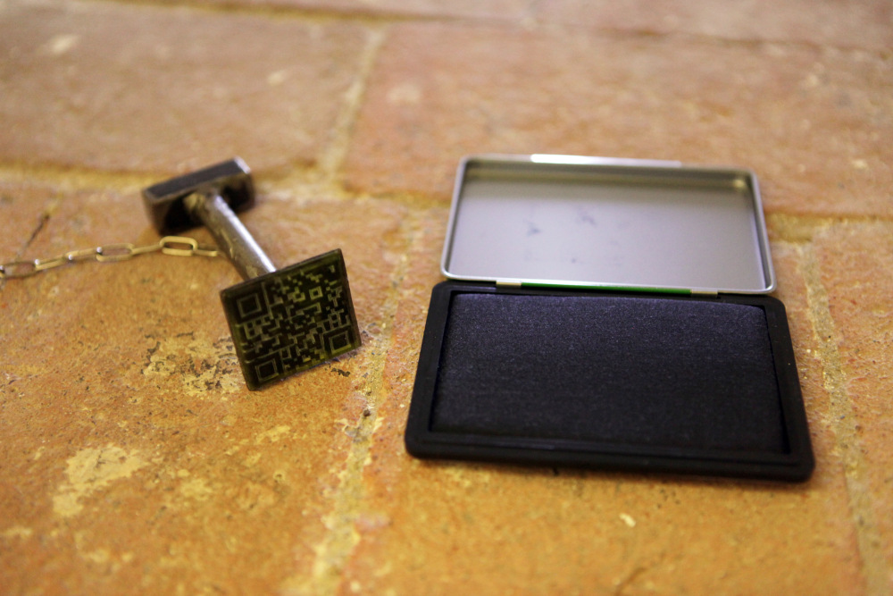
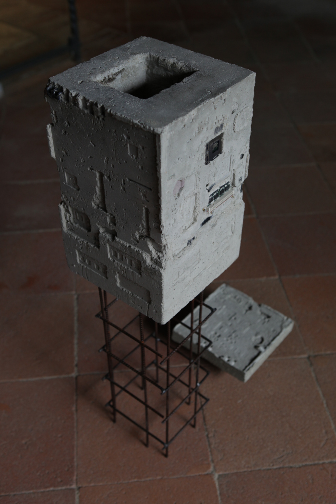
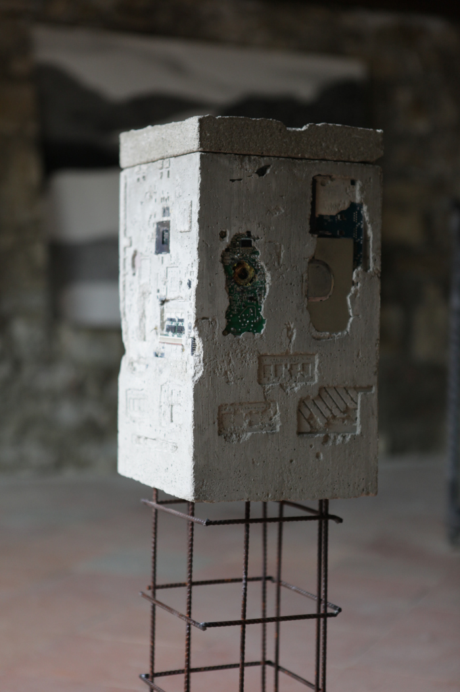
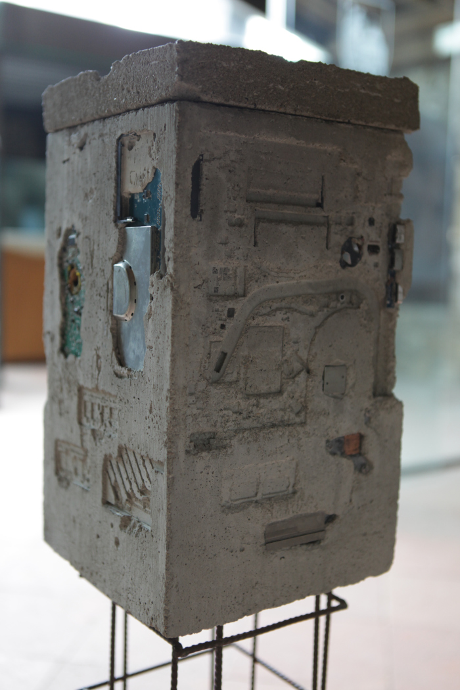
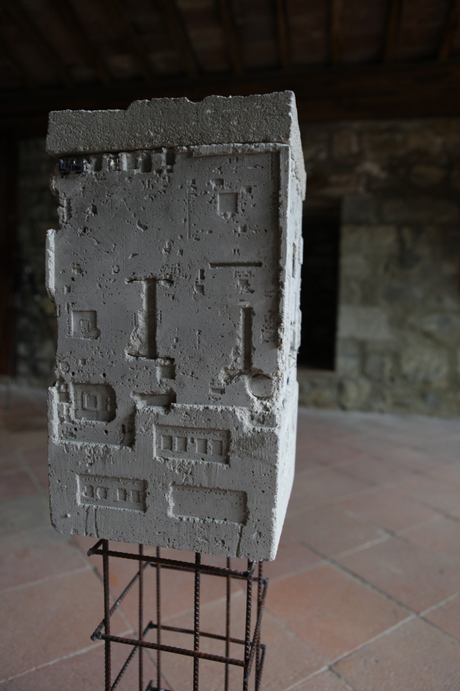
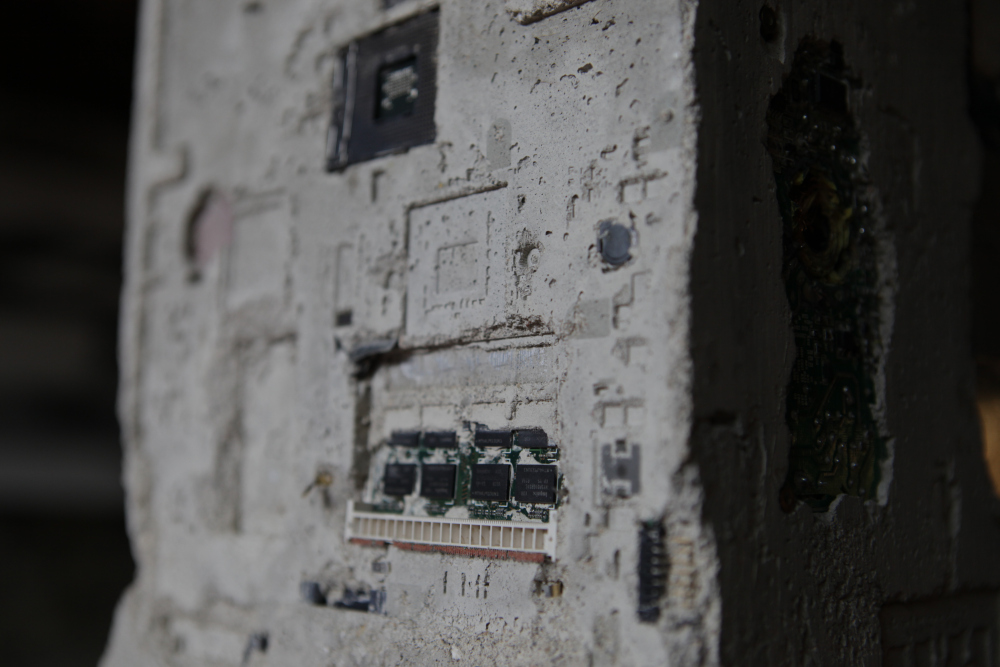
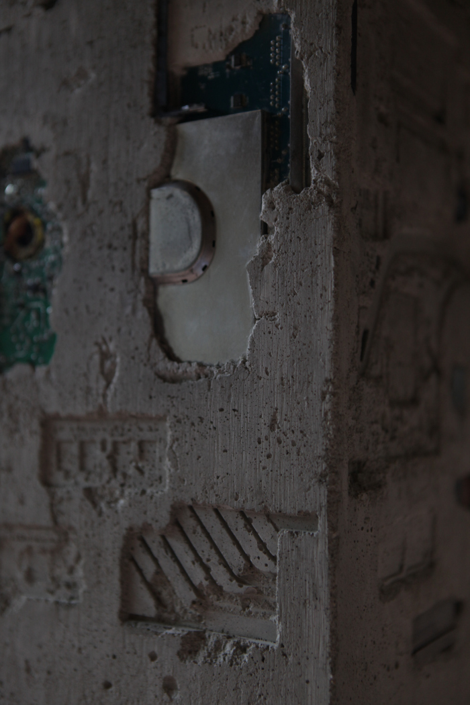
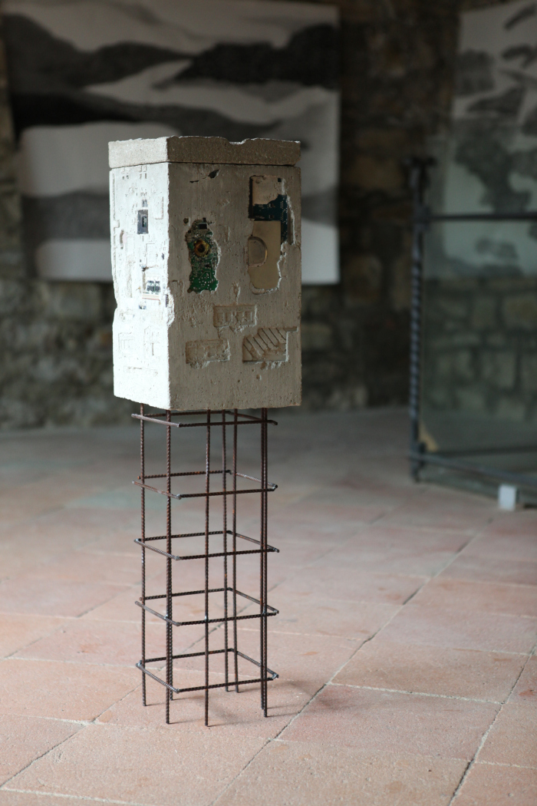
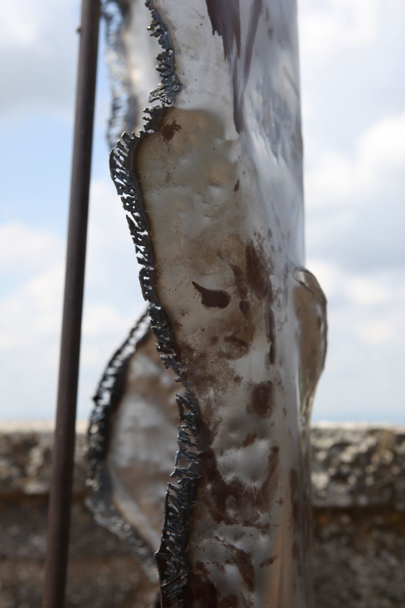
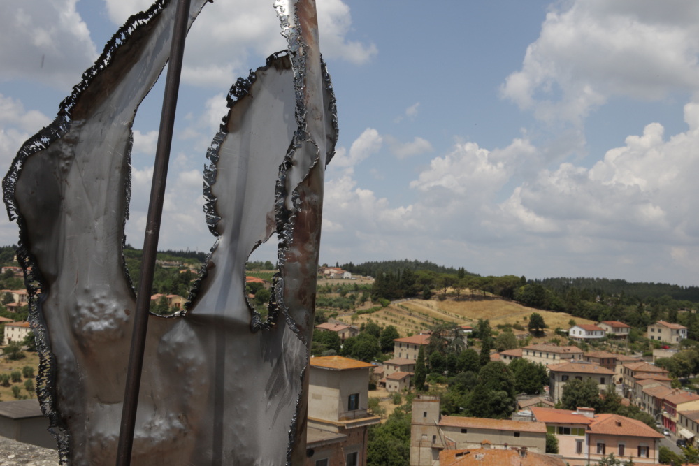

Limen désigne un seuil, entendu comme traversée, passage, lien entre deux états.
La chambre funéraire manquante du tumulus de Montecalvario à l’origine de nos recherches évoque ce lieu, non-lieu, de transition, de changement, une forme, non-forme, qui reste à inventer, à informer de l’intérieur, un carré qui peut encore se remplir de tous les possibles.
Cet espace qui ouvre vers l’éternité fait ainsi peser une responsabilité, trop lourde à porter, envers les formes qu’il y projette, pour cela elles sont présentes en tant que parties d’une structure, d’un rite de passage, celui-ci n’en étant que le seuil, la phase liminale, d’indétermination.
Triptyque:
Surface - profondeur - surface
Un transpercement de la chair et du monde.
Empreinte, écorchement, être par négation.
Marquer la peau, utiliser son propre corps comme partie d’une technologie, pour aller au-delà de lui, transpercer l’opacité de la peau.
Descente dans les profondeurs de l’intimité des pensées, des souvenirs.
Existe-t-il une identité à travers le temps?
Le corps, la voix, la mémoire sont interrogés comme possibles dépositaires de cette identité mais tous semblent échouer dans cette tâche.
La voix, perçant de l’intérieur de l’urne, lisant des récits passés sans cohérence, se décompose et finit par devenir un bruit, une rumeur lointaine, indéchiffrable donnant seulement corps à une architecture, formant un lieu de la non-identité.
Fragments, bribes de soi.
Le régime du visible est constamment travaillé par un processus cyclique des formes qui apparaissent et qui disparaissent.
En conséquence le dedans et le dehors se « réciproquent », les surfaces sont profondes, le corps apparent est hanté par le viscéral, la peau par les
entrailles.
Le lieu est une peau que l’on peut toucher, effleurer et un ventre où l’on peut s’engloutir, s’anéantir.
Images:









